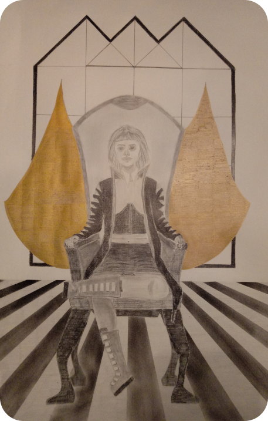

Aquesta va ser la pràctica final de l’assignatura d’Expressió Gràfica. L’activitat consistia a dibuixar un personatge inventat que havia d'estar ambientat en l'estètica d’un temple futurista que vam haver de crear per una pràctica anterior. L’objectiu era simular el desenvolupament d’un personatge per a un videojoc o animació. El dibuix havia de ser d’una figura humana completa integrada en un context i a la qual se li veiessin bé tan el rostre com les mans. Aquest va ser el meu resultat:
